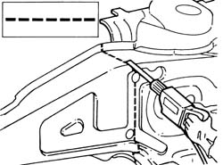
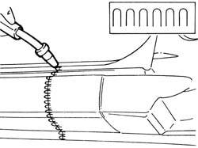
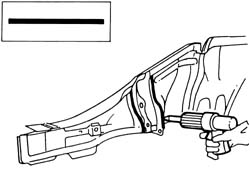

INTRODUCTION - REMOVING REFITTING
- Path
- Procedures > 72 PANELS AND FRAMES > 7210 REMOVING-REFITTING > INTRODUCTION - REMOVING REFITTING
- Kind
- repair procedure (removal / refitting; the operation number is the code)
- Applies to
- all engines; all production periods
- Interactive page
- https://sloeber94.github.io/elrnDB-aBrrSpdr/en/#/946002715
Applies to: all engines; all production periods
WARNINGS
WARNINGS
Below is the graphic index and description of the symbols that appear in the repair procedures.
Symbols
.

1 - Cutting with alternating saw
2 - Cutting with circular blade saw
3 - Cleaning with rotary brush
4 - Removing spot welds with chamfering machine
5 - Removing spot welds with drill. Drilling for MIG welding
6 - Removing body panel with chisel. Drilling for MIG welding
7 - Applying electro-weldable protective coatings
8 - Applying high thickness electro-weldable protective coatings
9 - Component location
10 - Measurement
11 - Component fastening
12 - Threaded rivet fastening
13 - Checking alignment gaps
14 - Straightening edges with mallet and dolly block
15 - Removing spot welds with mallet and chisel
16 - Removing treatment with air knife
17 - Spot welding
18 - MIG welding
19 - Welding with oxy-acetylene torch
20 - Grinding
21 - Applying anti-oxidant protection
22 - Sealant application
23 - Application of underbody protection
24 - Paint application
25 - Application of protective waxes
26 - Application of foam products
27 - Heating with hot air
28 - Removing metal offcuts
Process symbols
Below are the work symbols that are described in the repair procedure with an example of their application. In the illustrations for the procedures, next the number of the procedure steps for welding operations, sometimes there are numbers in brackets that indicate the number of spot welds to be made or filled by MIG welding.
Cutting with a power saw or chisel

Spot welding.

Spot welding (three panels)

MIG welding - seam - sections

Brazing

MIG fill welding

Sealing
